On dispose des données sur des variables économiques, financières et de gouvernance relatives aux entreprises de l’EuroStoxx 600. Ce projet vise à étudier les déterminants de la performance environnementale des entreprises de EUROSTOXX 600. On cherche à savoir pourquoi une entreprise donné est plus performante qu’une autre sur le plan environnementale. En se basant sur la norme ESG (Environnement, Social, Gouvernance), qui évalue l’impact des entreprises de manière globale, en prenant en compte trois dimensions principales : l’environnement, les aspects sociaux et la gouvernance.
Méthodes et outils :
Nous allons mettre en place un modèle de régression linéaire multiple entre la variable Environment Pillar Score (EPS) qui mesure de la performance environnementale de l’entreprise et les variables économiques, commerciales, financières et de gouvernances.
le travail en sera repartie en trois grandes parties :
L’analyse descriptive pour comprendre notre jeu de données et les relations entre les variables
Une Analyse en Composante Principale(ACP) : Les variables financières étant nombreuses (9) on a un problème de choix, on ne peut les utliser elles toutes dans notre modèle de régression car elles peuvent être corrélées donc entrainer des biais d’endogénéité.
L’ACP aide à condenser l’information en un plus petit nombre de facteurs, afin déviter une redondance d’informations et faciliter ainsi l’analyse. En réduisant le nombre de variables sans perte significative d’information, l’ACP fournit une représentation plus simple et plus interprétable des données financière de notre étude.
La régression linéaire : connaitre quels sont les variable qui expliquent demanière significative la performance environnementale des entreprises.
Partie I : Data Cleaning et Analyse descriptive
rm(list =ls())getwd()
[1] "C:/Master USPN/Cours M1 Big Data/Projets Portfolio/Dataset/Projet-PE"
setwd("C:/Master USPN/Cours M1 Big Data/Projets Portfolio/Dataset")library(readxl)library(lmtest)
Le chargement a nécessité le package : zoo
Attachement du package : 'zoo'
Les objets suivants sont masqués depuis 'package:base':
as.Date, as.Date.numeric
Warning: NAs introduits lors de la conversion automatique
Warning: NAs introduits lors de la conversion automatique
Warning: NAs introduits lors de la conversion automatique
Warning: NAs introduits lors de la conversion automatique
Warning: NAs introduits lors de la conversion automatique
Warning: NAs introduits lors de la conversion automatique
Warning: NAs introduits lors de la conversion automatique
Warning: NAs introduits lors de la conversion automatique
Warning: NAs introduits lors de la conversion automatique
Notre Dataset contient des valeur manquantes et des petites irrégularités. Les colonnes “board” et “co2_emis” contiennent trop de valeurs manquantes, ont fais le choix de les ignorer elles seront donc pas incluses dans le modèle. On fait le choix de supprimer également les valeur manquantes( pas importantes des cas ci) de certaines colonnes et de conserver que les lignes propre.
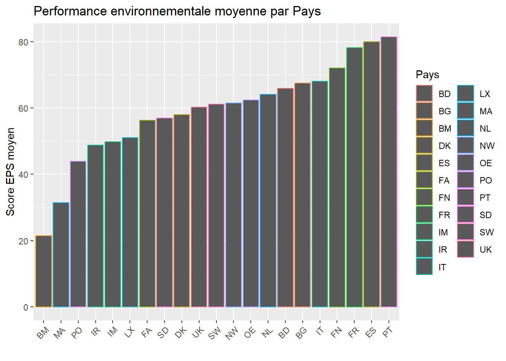
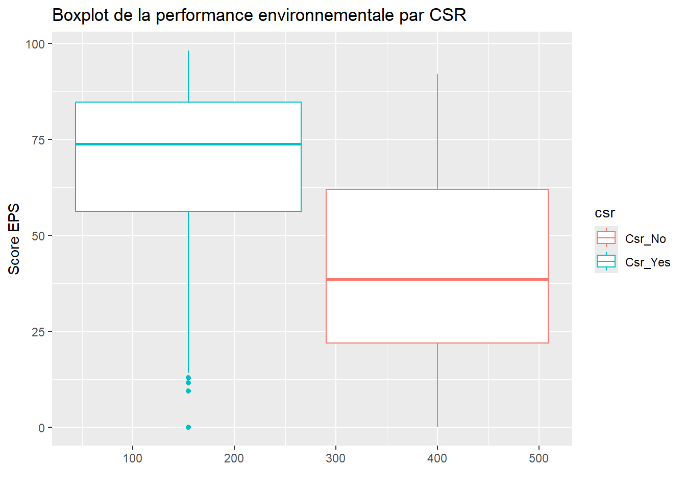
Partie II : Analyse en Composante Principale (ACP)
Nous allons réaliser une ACP sur les 9 variables prix et retenir un ou deux facteur pour l’injecter dans notre modèle de régression linéaire.
# construction et visualisation de la matrice de coorelationmatrice_corre =cor(data_acp, use ="complete.obs")corrplot(matrice_corre, method ="color", type ="upper",order ="hclust",tl.col ="black", tl.srt =45,addCoef.col ="black", cl.cex =1.2, addCoefasPercent =TRUE, number.cex =0.8)
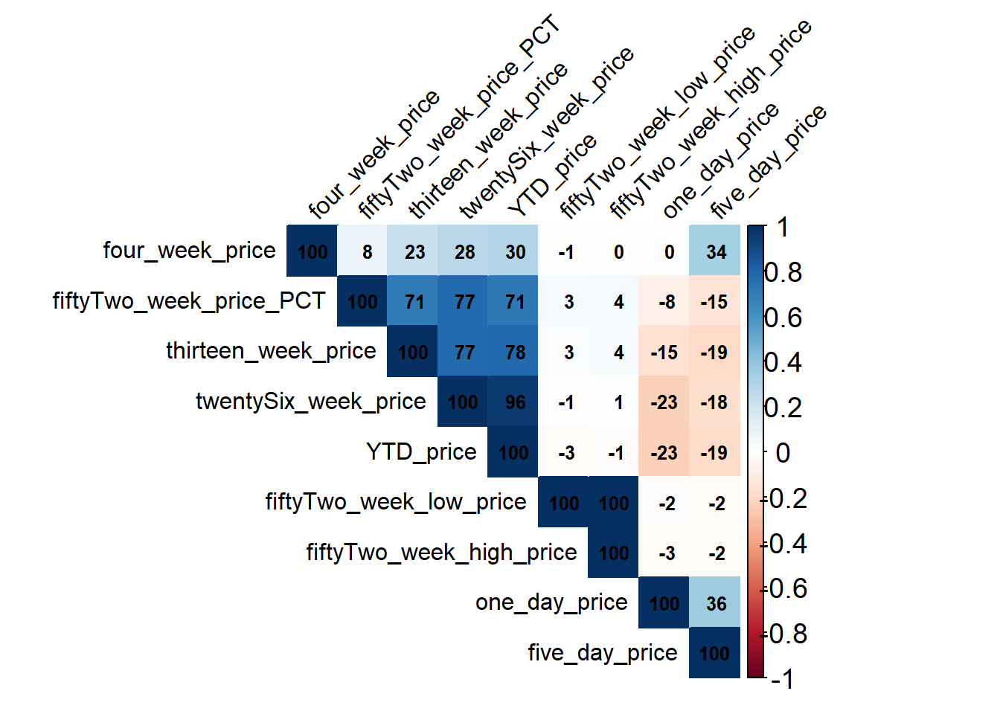
data_pca =scale(data_acp, center = F, scale = F)
fviz_eig(acp_res, addlabels =TRUE)
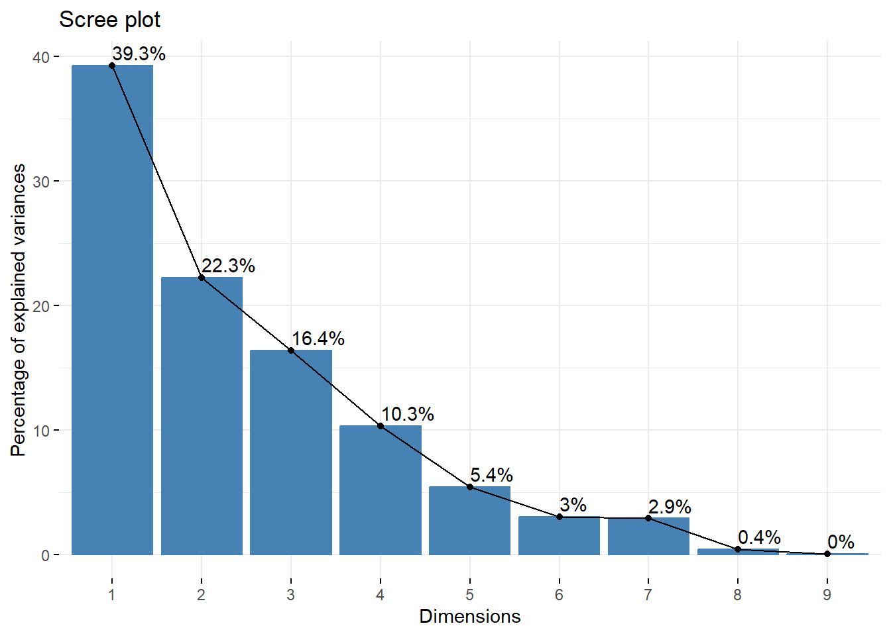
# Cercle de correlationfviz_pca_var(acp_res,axes =c(1,2), col.var ="cos2", repel = T,gradient.cols =c("green","orange","red"),title ="Cercle de correlation des variables")
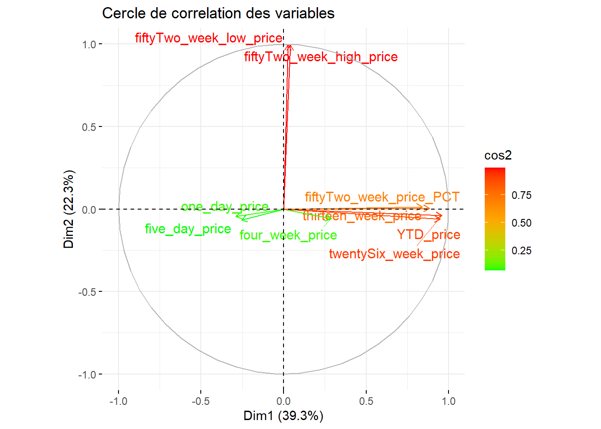
# variables determinantes des axes principauxvariables=get_pca_var(acp_res)corrplot(variables$cor, is.corr=FALSE)
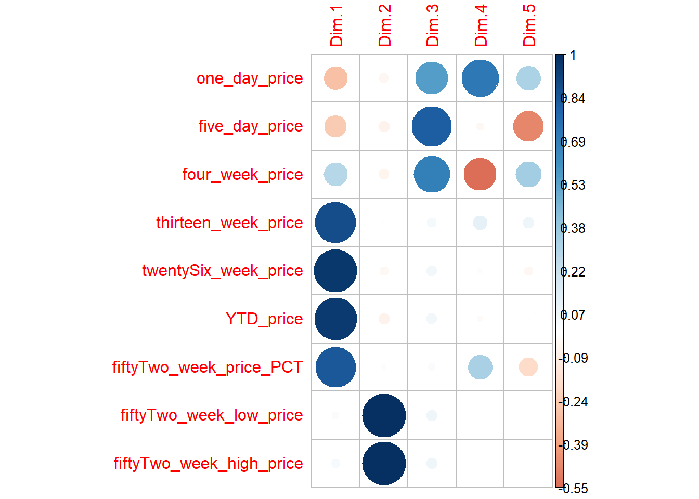
fviz_contrib(acp_res, choice ="var", axes =1, top =3)
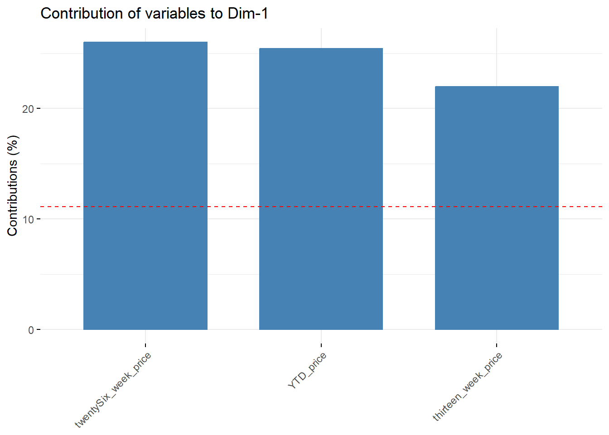
fviz_contrib(acp_res, choice ="var", axes =2, top =3)
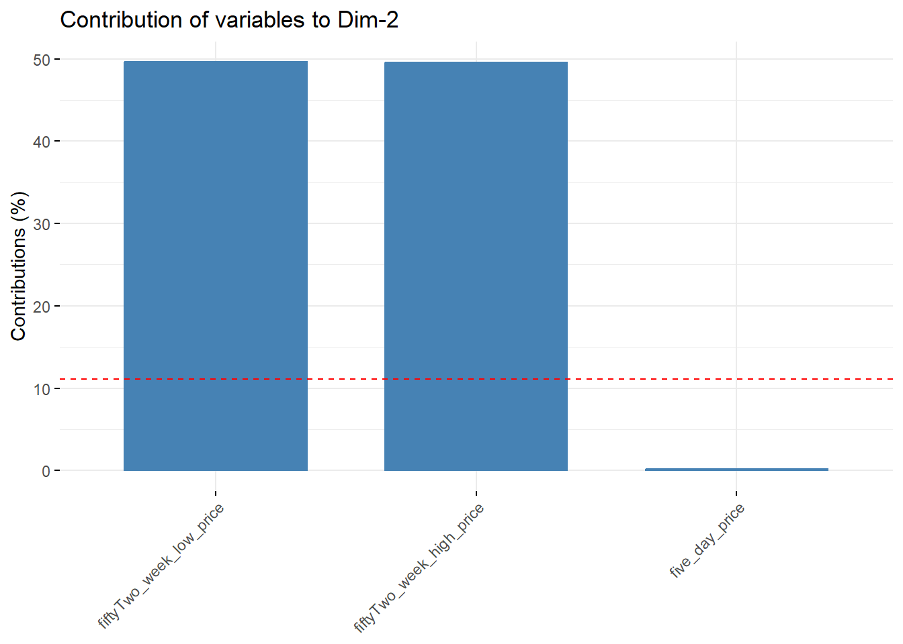
# contribution par cosinus carrefviz_cos2(acp_res, choice ="var", axes =1, top =3)
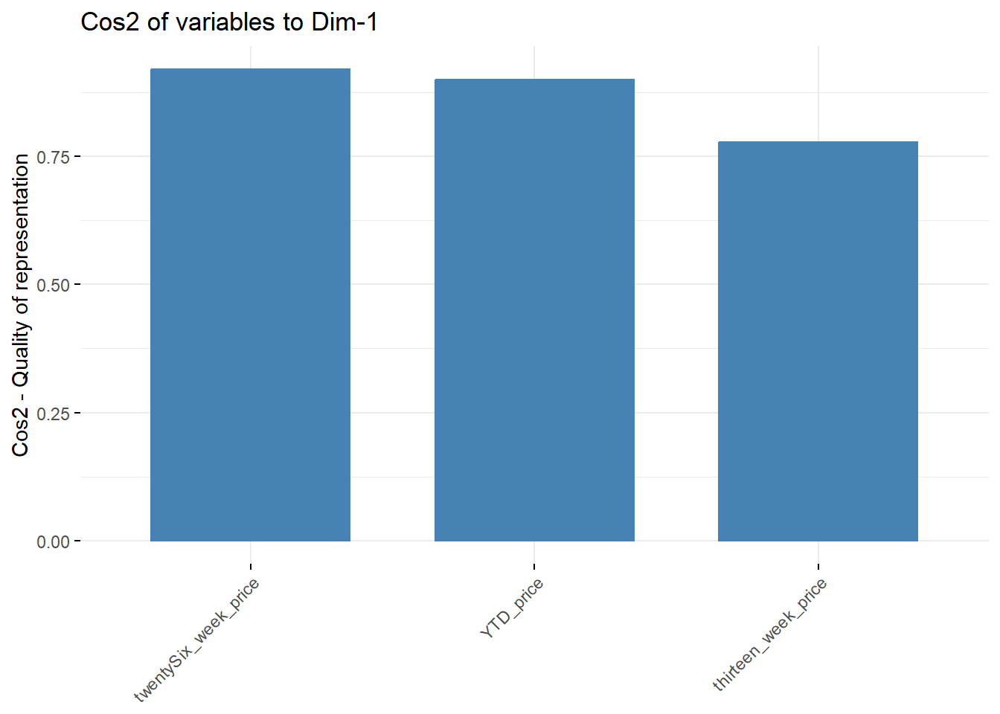
fviz_cos2(acp_res, choice ="var", axes =2, top =3)
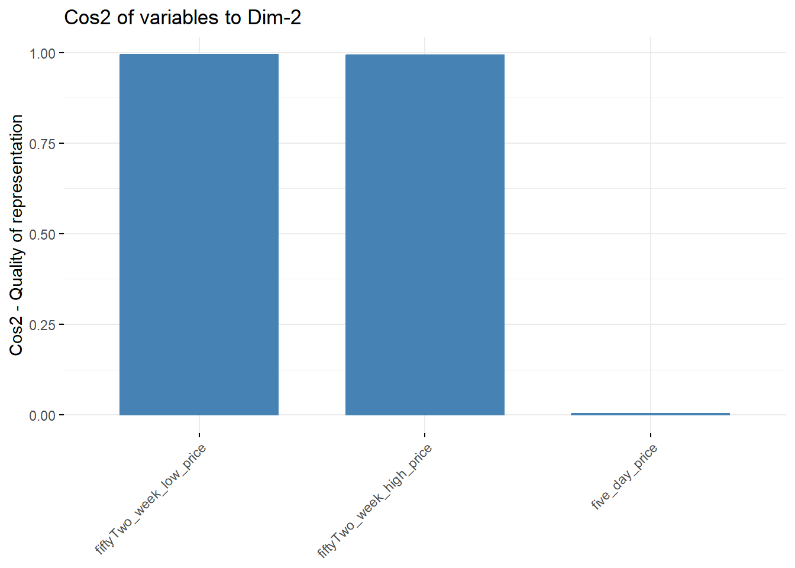
fviz_cos2(acp_res, choice ="var", axes =3, top =3)
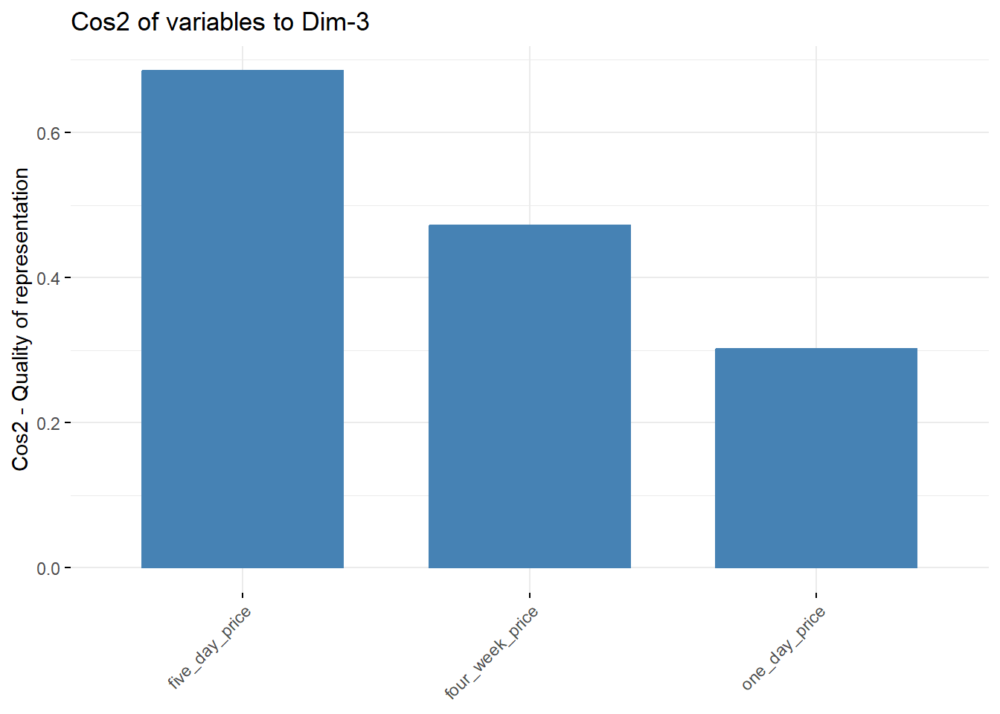
# contribution des individus a la formation des axes principauxfviz_pca_ind(acp_res,axes =c(1,2), col.ind ='cos2') +scale_color_gradient2(low ="orange", mid ="white", high ="black", midpoint =0.5)+theme_minimal()
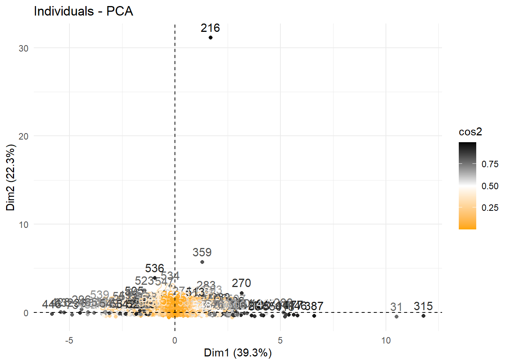
# Extraction des composantes principales F1 et F3facteur_prix_f1 = acp_res$ind$coord[, 1]facteur_prix_f2 = acp_res$ind$coord[, 2]facteur_prix_f3 = facteur_prix_f2filtre["prix_F1"] = facteur_prix_f1filtre["prix_F2"] = facteur_prix_f2filtre["prix_F3"] = facteur_prix_f3
Partie III : Modèle de régression linéaire multiple
Shapiro-Wilk normality test
data: mod$residuals
W = 0.97964, p-value = 5.956e-07
summary(mod)
Call:
lm(formula = eps ~ emp + sales + csr + prix_F1, data = filtre)
Residuals:
Min 1Q Median 3Q Max
-66.014 -13.418 2.911 15.481 51.453
Coefficients:
Estimate Std. Error t value Pr(>|t|)
(Intercept) 4.197e+01 1.968e+00 21.326 < 2e-16 ***
emp 4.120e-05 1.244e-05 3.311 0.000990 ***
sales 6.565e-08 1.920e-08 3.419 0.000674 ***
csrCsr_Yes 2.328e+01 2.224e+00 10.464 < 2e-16 ***
prix_F1 1.929e+00 4.569e-01 4.223 2.82e-05 ***
---
Signif. codes: 0 '***' 0.001 '**' 0.01 '*' 0.05 '.' 0.1 ' ' 1
Residual standard error: 19.76 on 546 degrees of freedom
Multiple R-squared: 0.2881, Adjusted R-squared: 0.2829
F-statistic: 55.25 on 4 and 546 DF, p-value: < 2.2e-16
A Propos de la base de données
On dispose des données sur des variables économiques, financières et de gouvernance relatives aux entreprises de l’EuroStoxx 600 Ci-joint la liste et la description des variables de notre Dataset.
A. Identifiants et caractéristiques :
Identifier (RIC) : Identifiant RIC de l’entreprise
Company Name : Nom de l’entreprise
ISIN : code ISIN de l’entreprise
COUNTRY OF DOMICIL : Code du pays de l’entreprise
B. Variables environnementales :
Environment Pillar Score : Mesure de la performance environnementale de l’entreprise.
Carbon Intensity per Energy Produced : Mesure relative aux émissions de CO2.
C. Variables économiques et commerciales
EMPLOYEES (EMP) : Nombre d’employés par entreprise.
OPERATING PROFIT MARGIN (MARGIN) : Profit opérationnel de l’entreprise
NET SALES OR REVENUES (SALES) : Les revenus commerciaux nets.
D. Variables financières
Market Cap (MCAP): capitalisation boursière de l’entreprise
RETURN ON INVESTED CAPITAL (RCAP) : le rendement du capital investi